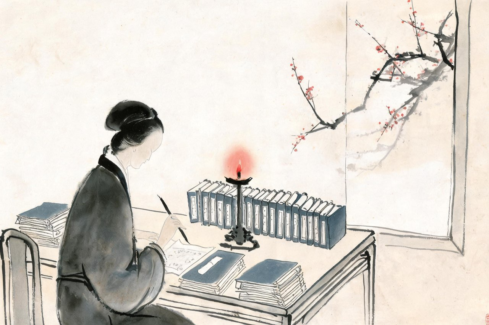
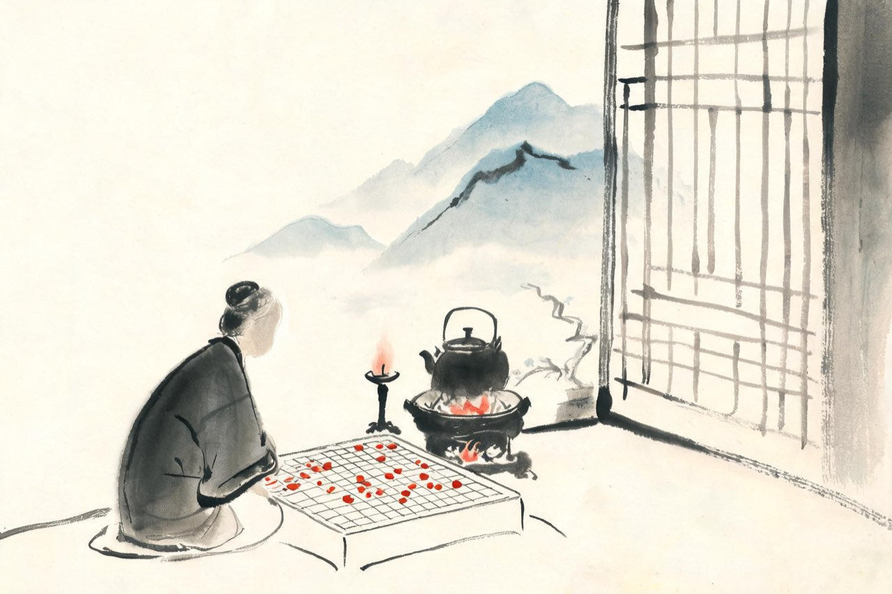

李清照 · 1134-1155
临安
帘儿底下

后序
绍兴四年，《金石录》三十卷终于校订完成。你为它写了后序。
从建中辛巳嫁入赵氏，到提笔这一天，三十四年之间，忧患得失，何其多——可是有聚必有散，乃理之常。人亡弓，人得之，又何足道。
你写道：岂人性之所著，死生不能忘之欤——人对痴迷的东西，到死也放不下吧。
写完序，你把进献的表章也拟好了。那部从五百钱开始的书，三十卷，二千卷，从此要交给国家。你替两个人，办完了两个人的事。
注
- 「有有必有无，有聚必有散，乃理之常。人亡弓，人得之，又胡足道」及「岂人性之所著，死生不能忘之欤」均为《后序》原文
- 《金石录》表上于朝的确切年份无载，约在绍兴十三年前后——本场景将进献系于写序同年，演绎，取「办完两个人的事」之收束

打马
这年秋冬，金与伪齐合兵南犯，前线告警。十月，你随逃难的人离开临安，十一月至金华，借住陈氏宅。
围炉避乱，无事可做，你迷上了一种叫「打马」的棋戏，还郑重其事地为它作了一篇赋。
赋里写的是棋，说的是人心：木兰横戈好女子，老矣谁能志千里？但愿相将过淮水。
一个在避乱中玩棋的老妇人，笔下全是过淮水、收中原。游戏的文章，比朝堂的奏章诚实。
注
- 「木兰横戈好女子，老矣谁能志千里？但愿相将过淮水」为《打马赋》原文
- 打马：宋代流行之棋类博戏；《打马赋》借博弈言恢复，古人已有定评
- 避乱金华卜居陈氏第，从赋序与《后序》
金华的双溪，春天据说很好。三月，风停了，尘土里还有落花的香气，花已经开尽了。日头老高，你懒得梳头。听人说：双溪春尚好。你动了一下心——也想雇条小船去泛舟。也只是动了一下心——
武陵春·风住尘香花已尽
风住尘香花已尽，日晚倦梳头。
物是人非事事休，欲语泪先流。
闻说双溪春尚好，也拟泛轻舟。
只恐双溪舴艋舟，载不动许多愁。
注
- 「舴艋」：形如蚱蜢的小船；双溪：金华名胜，婺江上游
- 系年以金华期为通行编年，亦有异说——词境与避乱金华晚年吻合
双溪终于没有去。倒是登了八咏楼——沈约建在婺江边的楼，六百年了。楼上望出去，水路一直通向南国三千里。愁到极处的人，有时反而会站到最高处——
题八咏楼
千古风流八咏楼，江山留与后人愁。
水通南国三千里，气压江城十四州。
注
- 八咏楼：南朝齐隆昌年间沈约守金华时所建，原名玄畅楼，因沈约题八诗改称
- 「十四州」：宋两浙路辖境之概数——江山气势语，非确指，待核
后来你回到临安，一个人住了很多年。又一个秋天的黄昏——你在屋子里找什么东西，自己也说不清找什么。乍暖还寒，淡酒敌不过晚来的风。大雁飞过，是旧时的相识——当年给你捎锦书的雁，如今连信也没有可捎的了——
声声慢·寻寻觅觅
寻寻觅觅，冷冷清清，凄凄惨惨戚戚。
乍暖还寒时候，最难将息。
三杯两盏淡酒，怎敌他、晚来风急！
雁过也，正伤心，却是旧时相识。
满地黄花堆积，憔悴损，如今有谁堪摘？
守着窗儿，独自怎生得黑！
梧桐更兼细雨，到黄昏、点点滴滴。
这次第，怎一个愁字了得！
注
- 「晚来风急」一作「晓来风急」；「怎生」：宋人口语，怎样、怎么——异文并录
- 作年无确考；十四叠字起笔为此词名世之处。词境系晚年孤居，本篇取晚年临安语境，演绎
- 「雁过也」三句：雁犹旧识而人不再——与早年「云中谁寄锦书来」遥遥相对
又是上元。临安的灯火把天染成暖色，落日熔金，暮云合璧。有酒朋诗侣派了香车宝马来请，你谢了。你坐在帘子后面，听外面的笑语，想起汴京的元宵——那时候闺中有的是闲暇，铺翠冠儿、捻金雪柳，你们打扮得比谁都齐整。如今憔悴了，怕见夜里的热闹。不如就在帘儿底下，听人笑语——
永遇乐·落日熔金
落日熔金，暮云合璧，人在何处。
染柳烟浓，吹梅笛怨，春意知几许。
元宵佳节，融和天气，次第岂无风雨。
来相召、香车宝马，谢他酒朋诗侣。
中州盛日，闺门多暇，记得偏重三五。
铺翠冠儿，捻金雪柳，簇带争济楚。
如今憔悴，风鬟霜鬓，怕见夜间出去。
不如向、帘儿底下，听人笑语。
注
- 「风鬟霜鬓」一作「风鬟雾鬓」；「三五」：正月十五——异文并录
- 场景年取晚年（卒年前后）；词无自系年，作于临安上元无疑
- 她身后，这阕词继续被人传诵——宋亡之际，刘辰翁上元诵此词而涕下。词比人活得久
- 同一时代，济南有个十几岁的少年辛弃疾正在长大——多年后他也将南渡，词史上并称「济南二安」——演绎